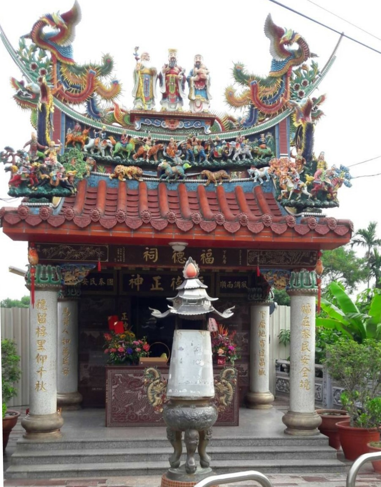

成功嶺
日治時期，成功嶺是訓練日本兵騎馬的軍事基地。戰後初期，中華民國政府接收為成功基地，之後成為「成功嶺訓練中心」，是陸軍入伍新訓與大專集訓的地方；為台灣1980年代以前出生的男大學生共同回憶，半個世紀以來，曾有130多萬名大專生在此接受軍事洗禮。
More榕樹三兄弟/士官長座椅
成功社區鄰近軍事訓練基地成功嶺，因地形關係有別於一般平面式眷村，是階梯式建築生態眷村，早睡早起作息，結伴步行到800公尺遠旭光國小運動，往返路程對高齡年長者是項負擔，中途休息站乃因應而生，親水公園上方三棵老榕樹下最受青睞，以士官長官階造型座椅勾起當年軍人回憶
More

下馬厝福德祠
居民陳進盛先生捐地10坪建土地公廟，經93年10月3日於社區發展協會理監事聯席會通過籌組籌備委員會，並於93年12月2日開工動土，歷經年施工期，於94年竣工，因地處下馬厝遺址範圍，故取名為「下馬厝福德祠」。
More
建興宮
建興宮已有兩百六十九年歷史，興建於道光十六年，緣起於福建省漳浦縣梅林社人士陳正力先生，隨深恭請開漳聖王一尊來台，經多年來歷次整修為二樓廟宇，一樓主要供奉開漳聖王，二樓雷音寺供奉觀音佛祖。每年農曆二月十五日舉辦遶境三和里及學田里，保佑里民平安，是里內一大盛事
More成功社區活動中心
活動中心門前花台是社區長輩聚集談天地方，三樓建築示各班隊聚會活動主要場地，籃球場更是打球運動休憩場所，是社區居民凝聚重要的節點位置。107年社區營造融入眷村地方特色，於入口處矮圍牆融入成功嶺500障礙圖像磚雕及入伍當兵到退役馬賽克拼貼圖像，保留居民回憶。
More

成功公園/老樹碉堡
公園是早期社區民意代表籌措經費興建休憩場所，厚礙於維護經費短促而荒蕪，108年經社區營造而煥然一新。老樹碉堡位於公園高處，林蔭茂密為居民休閒遊憩、及自然資源解說的地方，因鄰近軍事地區，因此可將『後花園』主題融入『成功嶺』意象，做結合。
More